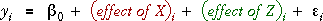
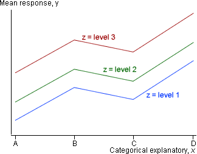
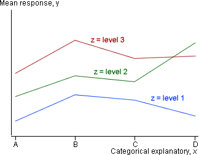
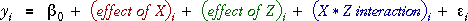

Model without interaction
As with numerical explanatory variables, if two categorical variables do not interact in their effect on the response, then the effects of the two variables add together,

For categorical variables, the effect of each variable is defined in a GLM with indicator variables.
If the mean response is plotted against x with different colours for each z, then the pattern is 'parallel' for each z (colour).

As in other models, interpretation and analysis is simpler if there is no interaction since the effects of X and Z can be described separately.
Model with interaction
If there is interaction, then these lines are not parallel, making it much harder to understand and explain the model.

Exercise and smoking
The data below are based on an experiment that investigated the effect of smoking on physical activity. The experiment involved 9 heavy smokers, 9 moderate smokers and 9 non-smokers, and 3 were randomly selected from each group to exercise on a bicycle ergometer, treadmill and stepper. The scatterplot below shows the time until maximum oxygen uptake (minutes) for each subject.
The coloured lines represent a model with no interaction for the data. Drag the five arrows to investigate this model, then click Least squares. Observe that the lines are parallel for the different smoking groups.
Now click Allow interaction. This allows the mean responses for all 9 combinations of smoking group and exercise to be separately adjusted. Click Least squares to see the best-fitting model.
The response means for the 3 smoking groups seem more similar on the bicycle than on the treadmill or stepper.
Defining the model with interaction
We define the model with interaction by adding terms to the no-interaction model. This will make it easier to test whether interaction exists since we can test whether these additional terms are required.

If X has nX different categories and Z has nZ categories, then the interaction can be defined with (nX - 1)(nZ - 1) extra parameters that correspond to the green arrows in the diagram above. These specify the differences between response mean for this model and the no-interaction model for the non-baseline categories of X and Z.
Exercise and smoking
The diagram below again allows the parameters of the models to be adjusted.
Firstly drag the red arrows on the baseline categories for the no-interaction model.
For any exercise-smoking combination, the estimated response mean is the sum of the intercept and the main effects for exercise and smoking.
Now click Allow interaction. Drag the four green arrows and observe that the interaction parameters for any smoking group are the differences between the pattern for this smoking group and that of the non-smoking group.
Click Least squares. The interaction term for heavy smokers on a treadmill is interpreted as follows.
The difference between times to maximum O2 on a treadmill and bicycle are estimated to be 5.10 minutes less for heavy smokers than for nonsmokers.
Expressing the model as a GLM
The interaction was defined above using extra parameters that are added to the model for the (nX - 1)(nZ - 1) combinations of non-baseline categories of X and Z. Indicator variables can be used to 'turn on' the appropriate parameters for these combinations.
Exercise and smoking
To reduce the size of the matrices, we will only show the model for 18 individuals (two instead of three for each combination of smoking and exercise). The GLM for these individuals is shown below.
Drag over the rows of the matrices. Observe that there is no interaction term if either exercise or smoking are at their baseline levels (bicycle and non-smoker).
There are four interaction parameters (and four corresponding columns of indicator variables in the design matrix, X) corresponding to the combinations of non-baseline categories of the variables. The indicator variables pick out the appropriate interaction parameter for the non-baseline categories.
(You can also click on the table at the bottom of the diagram to see the model for observations with any combination of smoking and exercise.)
Three-dimensional representation of model (optional)
The models with and without interaction can be successfully represented in a 2-dimensional plot of Y against X, with different colours representing Z. However a 3-dimensional diagram with axes for Y, X and Z is an alternative representation.
Exercise and smoking
The 3-dimensional scatterplot below initially shows a model without interaction for the data.
Drag the five red arrows to adjust the model then click Least squares.
Click the Interaction checkbox to allow an interaction in the model. This enables four extra green arrows that can be used to adjust the model with interaction. Finally click Least squares again to see the best model for the data.